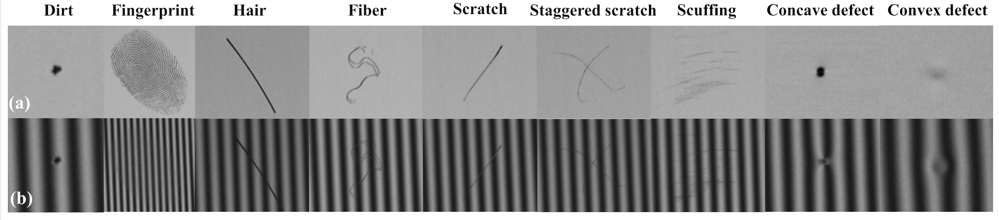

SpecularDefect9 Dataset
News
- 2022-07-xx SpecularDefect9 (classification part) have been released.
Overview Defects
SpecularDefect9 is a large-scale specular defect dataset generated based on 554 float glass
with an aluminized front surface and 553 polycarbonate mirrors.
There are a total of 9 classes of defects:
1.Dirt,
2.Fingerprint,
3.Hair,
4.Fiber,
5.Scratch,
6.Staggered_scratch,
7.Scuffing,
8.Concave_defect,
9.Convex_defect.

Classification Task
Specular defect imaging results at each angle include 49 images: one light intensity image named 'a.png', 24 horizontal fringe images named '1.png'~'24.png', and 24 vertical fringe images named '25.png'~'48.png'. So there are 54,243 images in SpecularDefect9. Each class of defect contains rich identities:- 1,544 number of Dirt identities
- 457 number of Fingerprint identities
- 460 number of Hair identities
- 2,266 number of Fiber identities
- 590 number of Scratch identities
- 277 number of Staggered_scratch identities
- 448 number of Scuffing identities
- 923 number of Concave_defect identities
- 914 number of Convex_defect identities
data structures
Classification
├── Test
│ ├── Concave_defect
│ │ ├── 1
│ │ │ │
│ │ │ ├── a.png
│ │ │ ├── 1.png
│ │ │ ├── 2.png
│ │ │ ├── ...
│ │ │ ├── ...
│ │ │ ├── 47.png
│ │ │ └── 48.png
│ │ │
│ │ ├── 2
│ │ ├── ...
│ │ ├── ...
│ │ └── 401
│ ├── Convex_defect
│ ├── Dirt
│ ├── ...
│ ├── ...
│ └── Staggered_scratch
└── Train
├── Concave_defect
├── ...
├── ...
└── Staggered_scratch
Detection Task
Comming soon.Downloads
- SpecularDefect9-CLS: [Baidu Drive] [Google Drive]
- SpecularDefect9-DET: Comming soon.